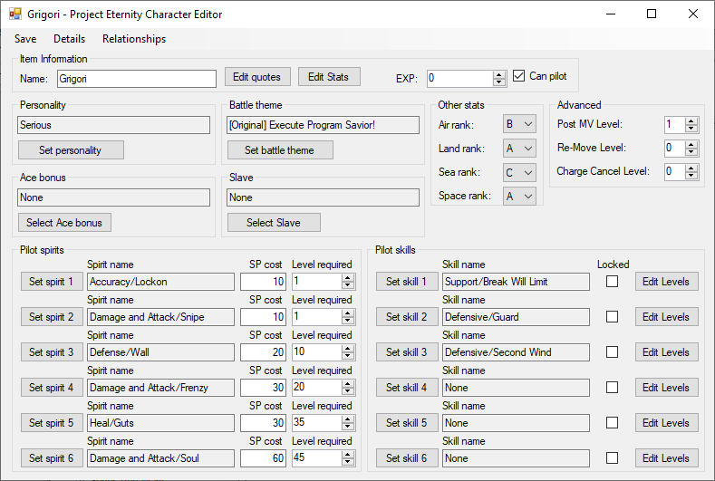

Characte Editor
You can adjust the stats of your character here, sprites, quotes, personality, theme, ace bonus, relationships, slave, spirits and skills.
For a more in depth guide, go
here.
Name: The name that will be used in game, you can have multiple character with the same name. You can use this to have multiple versions of the same character with different stats.
Personality: Select a personality from the ones created.
Battle theme: Select a music to play when attacking.
Ace Bonus: Select a skill to gain when the character reach max level.
Slave: Select a character that will always appear as a subpilot.